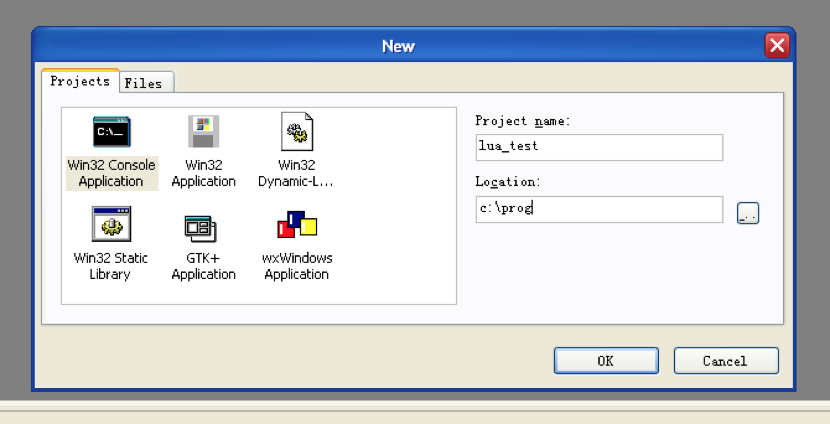
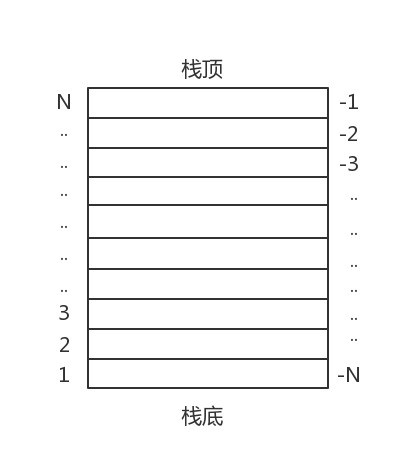
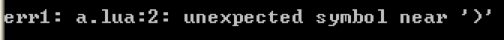

- 00 开篇词 跟我学，你也可以开发一款游戏！.md.html
- 复习课 带你梳理客户端开发的三个重点.md.html
- 第10讲 如何载入“飞机”和“敌人”？.md.html
- 第11讲 如何设置图像的前后遮挡？.md.html
- 第12讲 如何设置精灵的变形、放大和缩小？.md.html
- 第13讲 如何设置淡入淡出和碰撞检测？.md.html
- 第14讲 如何制作游戏资源包和保存机制？.md.html
- 第15讲 如何载入背景音乐和音效？.md.html
- 第16讲 如何在游戏中载入UI和菜单？.md.html
- 第17讲 如何用鼠标和键盘来操作游戏？.md.html
- 第18讲 如何判断客户端的网络连接？.md.html
- 第19讲 如何嵌入脚本语言？.md.html
- 第1讲 游戏开发需要了解哪些背景知识？.md.html
- 第20讲 脚本语言在游戏开发中有哪些应用？.md.html
- 第21讲 如何使用脚本语言编写周边工具？.md.html
- 第22讲 如何选择合适的开发语言？.md.html
- 第23讲 如何定制合适的开发协议？.md.html
- 第24讲 不可忽视的多线程及并发问题.md.html
- 第25讲 如何判断心跳包是否离线？.md.html
- 第26讲 如何用网关服务器进行负载均衡？.md.html
- 第27讲 如何制作游戏内容保存和缓存处理？.md.html
- 第28讲 热点剖析（一）：HTML5技术是如何取代Flash的？.md.html
- 第29讲 热点剖析（二）：如何选择一款HTML5引擎？.md.html
- 第2讲 2D游戏和3D游戏有什么区别？.md.html
- 第30讲 热点剖析（三）：试试看，你也可以编写一款HTML5小游戏！.md.html
- 第31讲 热点剖析（四）：安卓端和苹果端游戏开发有什么区别？.md.html
- 第32讲 热点剖析（五）：如何选择移动端的游戏引擎？.md.html
- 第33讲 热点剖析（六）：AR和人工智能在游戏领域有哪些应用？.md.html
- 第34讲 热点剖析（七）：谈谈微信小游戏的成功点.md.html
- 第35讲 热点剖析（八）：谈谈移动游戏的未来发展.md.html
- 第36讲 热点剖析（九）：谈谈独立开发者的未来发展.md.html
- 第3讲 游戏的发动机：游戏引擎.md.html
- 第4讲 底层绘图接口的妙用.md.html
- 第5讲 构建游戏场景的武器：地图编辑器.md.html
- 第6讲 从0开始整理开发流程.md.html
- 第7讲 如何建立一个Windows窗体？.md.html
- 第8讲 如何区分图形和图像？.md.html
- 第9讲 如何绘制游戏背景？.md.html
- 结束语 做游戏的过程就像是在雕琢一件艺术品.md.html
- 课后阅读 游戏开发工程师学习路径（上）.md.html
- 课后阅读 游戏开发工程师学习路径（下）.md.html
- 捐赠
第19讲 如何嵌入脚本语言？
从2005年开始，逐渐流行使用C/C++语言结合脚本语言（Lua、Python、Ruby等等）编写游戏。这是因为用C/C++编写游戏的传统方式，硬代码太多，而使用硬代码编写的游戏，更新难度很大，除非重新编译一次程序。
于是，就有人开始使用配置文件来做活动逻辑。比如填写好配置表、玩家等级多少、攻击力如何、等于多少的伤害力等等，一开始就将这些内容都读取进代码，在游戏中实时计算出来。
但是这种方法其实也并不方便。很久以前的游戏，由于硬件资源限制，所以一般都加载WAV格式。而加载MP3则需要机器对音乐文件进行解压缩再播放，如果机器硬件计算能力不好的话，会由于解压缩而导致整个游戏的运行效率下降。
脚本语言也是如此，如果机器硬件能力不好的话，会由于脚本语言的虚拟机要解释程序，导致游戏运行效率下降。随着电脑硬件的提升，我们在游戏中加载MP3音乐文件成为可能，而在游戏中加载脚本语言进行逻辑编写当然也是可以的。
《魔兽世界》就是使用Lua脚本语言编写的。类似《GTA》等大型游戏，都拥有一套自己的脚本语言和体系。 使用脚本语言，是为了能够在编写硬代码的同时，也能很方便地、不需要重新编译地编写逻辑代码。 事实上，现在很多大型游戏都使用这种方式来编写代码，甚至一些游戏引擎本身，也支持脚本语言和引擎本身所提供的语言分离编写。比如引擎用C++语言编写，脚本语言用Lua编写。
为什么使用Lua脚本嵌入C/C++硬代码？
今天我就来教你使用Lua脚本来嵌入C/C++硬代码。为什么我要选择Lua脚本语言来编写代码呢？
因为Lua脚本足够轻量级，几乎没有冗余的代码。Lua虚拟机的执行效率几乎可以媲美C/C++的执行效率。如果选择Python、Ruby等常用脚本语言来嵌入，并不是不行，而是要付出执行效率作为代价。因为Python、Ruby的执行效率远逊于Lua。
如果没有非常多的编码经验，你可能会问，为什么Python、Ruby的执行效率远逊于Lua呢？这个问题，用一本书的篇幅恐怕才能彻底讲明白。我这里只简要说一下原因。
Lua的虚拟机很简单，指令设计得也精简，Lua本身是基于寄存器的虚拟机实现，而Python等其他脚本语言是基于堆栈的虚拟机，而基于寄存器的虚拟机字节码更简单、高效。因为字节码，一般会同时包含指令、操作数、操作目标等内容。
另一方面，Python、Ruby之所以应用范围广，是因为它们拥有大量的成熟库和框架，而Lua只是一种很纯粹的脚本语言。因为Lua没有过多的第三方库，只提供最基础的I/O处理、数学运算处理、字符串处理等，别的与操作系统相关度密切的，例如网络、多线程、音频视频处理等等都不提供。
我在[第6讲]里，已经非常详细地讲过，如何将Lua脚本编译成为静态库，如果不记得的话，可以回去复习一下。编译好静态库liblua.a之后，我们就可以在编程中使用它了。
你也可以选择在解压缩出来的目录内，使用make命令来直接编译，编译会生成Lua虚拟机的执行文件lua.exe、luac.exe，当然这需要一整套MinGW的环境支持。
开始，我们还是使用MinGW Development Studio来创建一个工程。由于只是示例，所以名字可以任意取。我取一个叫作lua_test的工程名，并且将工程设置为Win32 Console Application。你可以看这个示例图。- 
建立好了工程之后，我们新建一个test.c文件。这个文件位于lua源代码路径下。我们将liblua.a 文件也放到同一个目录下，以方便后续链接时候调用。
在包含Lua头文件之前，我们需要将头文件写在某一个.hpp文件下，以便一次性包含进去，我们的代码可以这么写。
#ifdef __CPLUSPLUS
extern "C" {
#endif
#include "src/lua.h"
#include "src/lualib.h"
#include "src/lauxlib.h"
#ifdef __CPLUSPLUS
}
#endi
你可以看到，这里面包含了三个代码。这三个代码来自src目录下，其中最后一个lauxlib.h包含了大量的C语言形式的接口以及扩展接口。而定义extern “C”的意思是，使用C的方式进行链接，前置条件是，你的语言是C++语言（ifdef __CPLUSPLUS）。
定义好了这个hpp文件后，我们可以在C或者C++语言中进行包含。
#include “lua.hpp”
你需要了解三个Lua语言的细节问题
写完定义之后，我们就可以开始对Lua进行一系列的绑定操作了。在编程之前，我先用一些你能看得懂的语言，对Lua语言的细节进行一些描述。有三个点，需要你着重记一下。
首先，Lua的下标都是以1为最初始的值（当然反向可以使用-1为下标），而不是我们所熟悉的0。有个传言说，是因为作者当时编写最初版本的Lua时，计算错误才导致的，所以就这么一直沿用下来了，这个说法虽然不可考，但也算是一种解释。
其次，在C/C++内嵌Lua的做法中，Lua有两种读取脚本的方法。
一种方式是读取后直接运行，调用的函数是luaL_dofile。使用这个函数，脚本会在读取完毕后直接运行。当然如果出现错误，你也不知道错误的具体位置在哪里，调试起来不是很方便。
第二种方式是将脚本代码压到栈顶，然后使用pcall操作运行脚本，这个函数叫luaL_loadfile。事实上第一种方式也是使用这种方式并且将pcall操作直接调用起来，第一种方式的代码一看你就能明了。
#define luaL_dofile(L, fn)
(luaL_loadfile(L, fn) || lua_pcall(L, 0, LUA_MULTRET, 0))
这行代码在lauxlib.h中能找到。这段代码写得非常精妙，它的意思是，如果loadfile成功，那么就运行pcall函数，中间这个 || （或者）已经直接判断了loadfile是否成功。因为loadfile函数操作成功就返回0，否则就返回1。
而在“或者”这个逻辑判断下，只要是0，就继续往下判断；只要是1，就直接返回条件为真。所以，在这行代码下，只要是1，就中断dofile这个宏的操作；只要是0，就进行pcall操作。
最后，我要说一下Lua的堆栈。理解了堆栈的计数方式，就能很容易地理解我后续要讲解的代码中的计数方式。Lua的堆栈可以从这个图里看出来，从栈底往上表示可以用1、2、3、4、5，而从栈顶往下表示是-1、-2、-3、-4、-5。- 
如何使用Lua以及liblua.a来进行与C语言的绑定操作？
我们现在开始使用Lua以及liblua.a来进行与C语言的绑定操作。
首先，我们需要包含之前我们所定义的lua.hpp头文件，随后我们开始在main入口函数处，定义一些变量。
#include "lua.hpp"
int main(int argc, char ** argv)
{
int r;
const char* err;
lua_State* ls;
….
}
在这里，我们定义了三个变量，其中r是用来接收返回值的；err是一个常量字符串，用来接收错误字符串并打印出来；而lua_State* ls就是Lua虚拟机的指针了。
我们再来看接下来的代码。
ls = luaL_newstate();
luaL_openlibs(ls);
在这两行代码中，首先初始化一个虚拟机（在Lua 5.1中，使用的函数是 lua_open来新建虚拟机），并且将虚拟机地址赋值给ls指针。随后，我们拿到这个指针之后，就在之后的代码中“打开”Lua所需要用到的各种库。我们用到luaL_openlibs。我现在只是给你示范，你可以一个一个库单独打开。
我们新建了虚拟机，并且打开了Lua类库。我们继续看下面的代码。
r = luaL_loadfile(ls, argv[1]);
if(r)
{
err = lua_tostring(ls, -1);
if(err)
printf("err1: %s\n", err);
return 1;
}
r = lua_pcall(ls, 0, 0, 0);
if(r)
{
err = lua_tostring(ls, -1);
if(err)
printf("err2: %s\n", err);
return 1;
}
lua_close(ls);
我来具体解释一下。这段代码中，argv[1]的是命令行输入的第一个内容。比如我们的程序叫lua_test，那么我们在Windows命令行中，输入lua_test a.lua，那么其中a.lua 就是argv[1] 这个内容。
luaL_loadfile我们在前面介绍过，就是载入文件并不运行。当然在这个期间，它会检查基础的语法。如果你少一个括号或者多一个引号，就会在这个时候给你一个错误信息，这个错误信息就是利用r这个变量判断的。如果r的返回值不等于0的话，那就是出错了。出错的时候，Lua会将出错信息压栈顶，而栈顶是从-1开始表示，所以我们要取出栈顶的错误信息lua_tostring(ls, -1);，并且将它赋值给err，最后由err打印出来。
认为没有错误之后，就是过了这一关。第二关我们需要使用lua_pcall函数，来调用Lua脚本文件，其中第一个参数是虚拟机指针，第二个参数是传递多少参数给Lua，第三个参数是这个脚本返回多少值，第四个是错误处理函数，可以是0，那就是无处理函数。
pcall的返回值也是一样，如果不是0的话，就说明出错了。和之前的luaL_loadfile不同，这时候一般是运行时错误，比如运行时类型错误等等。同样的，pcall也会把错误信息压到栈顶，我们直接去将栈顶的内容转成string就可以打印出来了。最后，我们将Lua虚拟机通过lua_close关闭。
按常理来说，我们现在可以来运行一下效果了，你可以先等等，我们先写一段错误的Lua代码，来看看执行起来会发生什么情况。
print "test running")
我们故意少写一个括号，然后将源代码命名为 a.lua，我们来运行看看。会出现一个这样的错误信息：- 
在发现语法错误后，程序就会报错，另外，如果你输入了一个根本不存在的文件，比如我们这么运行，test_lua xxx.lua，也会在loadfile的时候出错。
小结
我们今天的内容就到这里。下次我会进一步把Lua的脚本嵌入的细节呈现在你面前。我们来总结一下今天的内容。
因为Lua脚本足够轻量级，几乎没有冗余的代码。Lua虚拟机的执行效率几乎可以媲美C/C++的执行效率。所以我们选择使用Lua脚本来嵌入C/C++硬代码。
Lua脚本在C/C++语言里面嵌入，需要先声明一个虚拟机并且赋值给指针。
Lua脚本需要先loadfile再pcall调用脚本文件，loadfile会检查最基本的脚本文件内容，比如文件是否存在，比如脚本代码是否出错，而pcall会在运行时出错的时候将错误压至栈顶。
Lua错误会将错误压制栈顶，我们要取出来，需要使用-1下标取出栈顶的内容，并转成string打印。
给你留一个小问题吧。
如果直接使用luaL_dofile，相对于把loadfile和pcall分开写，这样有什么优劣呢？
欢迎留言说出你的看法。我在下一节的挑战中等你！
© 2019 - 2023 Liangliang Lee. Powered by gin and hexo-theme-book.